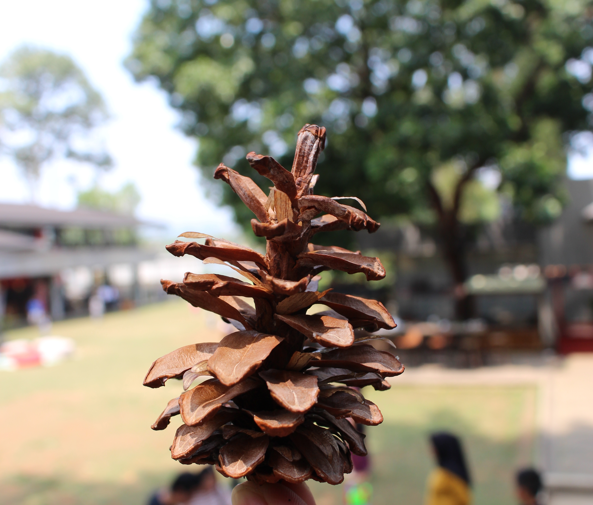

19 Oktober 2019
Jalan-Jalan ke Bandung Part 2

Kalau ke Bandung sepertinya ada yang kurang kalau belum eksplore ke tempat – tempat nongkrong yang instragammable. Tempat yang saya kunjungi ini namanya Foresta Coffee. Letaknya di daerah Ciumbuleuit, tidak jauh dari pusat kota Bandung.
Foresta coffee ini satu area dengan Nara Park Bandung. Selain ada rerumputan yang lapang, lokasinya juga dikelilingi pohon pinus. Kebetulan saya ke sini siang, tapi meskipun outdoor udaranya cukup sejuk. Tempat ini sangat cocok digunakan untuk nongkrong bareng sahabat maupun keluarga. Very recommended, jadi bakal balik ke sana lagi kalau ke Bandung. Kalau mau tau lebih jelasnya kunjungi instragamnya @forestacoffeeid.
Lokasi:
Nara Park
Jl.Rancabentang no.28, bandung (sebelah rabbit town)
Jam buka : 8am-11pm
RSVP: 022-64404047